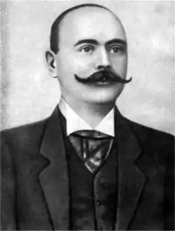

Лесь Мартович, насправді Олекса Семенович Мартович (*12 лютого 1871, Торговиця — †11 січня 1916, Погорисько) — український письменник та громадський діяч.
Біографія
Народився 12 лютого 1871 року в селі Торговиця тодішнього Городенківсь-кого повіту на Станіславівщині (нині Городенківський район, Івано-Франків-ської області). Олекса родився у родині селянина-бідняка, який пізніше зумів стати ще й сільським писарем. Його батько самотужки вивчився грамоти, що, й допомогло йому піднятися з простого наймита до писаря, і стати "взором порядного, непідкупного громадянина", авторитетним серед односельчан округи. Це посприяло йому в подальшому житті, коли він обзавівся справжньою господаркою: 15 морґів поля, гарно виправлена хата, своя пасіка і сад. За спогадами Василя Стефаника, сама ж родина Мартовичів належала до давнього раввінічного гебрейського роду, але дід письменника, через незвідані обставини, змушений був відректися від одноплемінників і прийняв християнство, тому він і був вигнаний зі своєї общини і був приречений на поневіряння. Через це батько Олекси змушений був довгі роки наймитувати та важко працювати. І доля таки навернулася до нього, і вже на схилі літ це був знаний в селі/окрузі писар та відповідальна особа — що відзначалася розсудливістю, розумом, чесністю, працьовитістю, відчуттям громадського обов'язку та самовіддано захищаюча місцевих селян. Лесь ріс серед дітей сільської бідноти (і ці картини свого дитинства він змальовував в своїх нарисах — особливо в "Гарбаті"). Спершу, Олекса Мартович учився в Торговицькій дворічній школі, а потім у п'ятирічній школі села Топорівці (що розташувалося поблизу батьківського села). В 1882 році батько Олекси спромігся віддати сина до Коломийської класичної гімназії (витративши чималі кошти й надалі важко працював, аби утримувати синові науки), там Лесь Мартович й познайомився зі своїми майбутніми друзями-побратимами — Василем Стефаником та Іваном Семанюком (Марком Черемшиною), які трохи пізніше теж поступили на навчання до цього закладу. Наука Мартовичу давалася доволі легко, він устигав ще й помагати батькові та знаходив собі підзаробітки. Та найскладнішим і протирічливим для нього стало гімназійне середовище, яке, на ті часи, було доволі різношерстним і найбільше допікали Олексі Мартовичу зарозумілі й пихаті паничі. Та й учителі, й керівництво закладу, зчаста, протиставляли селянських дітей міським паничам-гімназистам, які постійно дошкуляли тим за мужицьке походження, за селянську одіж, за помилки в польській вимові. Сам Мартович в одній зі своїх новель ("Нічний гість") записав: "... Івана, як звичайно, в гімназії переслідували. Все йому говорили: до гною хлопові, не до школи! А він таки держався тої школи. Цілий час був у бурсі або вдержувався з лекцій. Ще в гімназії дістав сухоти". Саме тут, в гімназії, Олекса вперше так чітко і яскраво відчув ту соціальну та національну пригніченість, яка панувала в галицькому суспільстві — яке доволі негативно сприймало українську (руську) самоідентифікацію, і особливо від "мужицьких" станів. Через такі обставини, довелося "мужицьким дітям" гуртуватися і спільно проводити час в науці та суспільній діяльності, яку вони заорудували в гімназії та по коломийській окрузі. Звитяжці-гімназисти рішилися на створення таємного гуртка, одним з очільників якого став Лесь Мартович. Гуртківці на своїх зібраннях (які часто відбувалися за містом) знайомилися з "заказною" літературою (твори передових суспільних авторів зі Львова, Відня, Києва), обговорювали все це, читали свої твори, виголошували доповіді на політичні та літературні теми. Крім того, вони ходили по селах, читали селянам газети, виступали з промовами (особливо в часи виборні), збирали народну творчість — були яскравими представниками народовців (які були в ті часи в кожній країні). Саме в цей час (90-і роки 19 століття) в Галичині розгорнувся демократичний рух народовців, активну участь узяла в ньому прогресивна українська гімназійна молодь. Підтримувані старшим поколінням (на чолі з Іваном Франком, Павликом та іншими), вони масово заопікувалися народним просвітництвом: так гурток гімназистів спромігся зібрати велику бібліотеку (як на той час) з 400 томів українських, російських, польських та німецьких авторів. Саме в цей молодечий час і відбулося головне захоплення Олекси Мартовича — письменництво. Та не тільки читанням, чи пропагуванням це обмежувалося, але й були перші його проби пера, які сталися ще в молодших класах гімназії. Хоча ці перші твори були різносторонніми: то їдка сатира, то лірічні віршування, а то й поеми про бога, святих, пекло, людину, а то прості новелі-замальовки з сільського житія. Та автор так і не рішився на їх публікуції, вдовольняючись лише читанням в колі своїх побратимів — сподвижників українства на Коломийщині. Але згодом, за наполяганням своїх друзів, він таки засів за писання і, в 1889 році, з-під його пера вийшла перша повноцінна книжечка — оповідання "Нечитальник".Цей свій літературний "первісток" він підписав псевдонімом "Лесь Мартович" і видав, окремою книжечкою, в Чернівцях. Слід зазначити, що суттєву допомогу в написанні цього твору надав його друг Василь Стефаник, який підредагував оповідання до друку та допоміг з коштами для публікації (а іншу частину коштів надала мати Олекси Мартовича). Сказати, що це був літературний вибух — поспішно, адже невеличкий тираж коротенької оповідки, нікому невідомого покутянина, не був помічений. Лише згодом, друзі Мартовича, читаючи її на своїх заходах, цитуючи на газетних шпальтах — привернули увагу до цього твору, що навіть Іван Франко та Микола Павлик відмічали початківця, особливо останній, навіть прохав в листі до юнака продовжувати писати. На 1889-1890 роки припала найбільша активність молодечого українського товариства в Коломиї і, до того ж, їх гострі публікації в пресі не припали до душі владоможцям та їх приспішникам. Тому й почалися нашіптування гімназійному керівництву щодо неприпустимості таких спудейських вольностей. Але цькування "селюків" поляками, гебреями та іншими "городськими" уже не несли жодного ефекту-шкоди для згуртованих побратимів. Тоді довелося задіювати інші важелі: за участь в агітаційно-просвітницькій роботі в селах з виступами проти тогочасних станів та звичаїв — керівництво виключило Леся Мартовича з Коломийської гімназії, а за ним, незадовго, виключеними були й Стефаник й інші їх побратими. Довелося Олексі підшуковувати, де би закінчити своїсвої гімназійні науки і тут йому в нагоді стало їх українське творче коло. За порадою своїх друзів Мартович, разом зі Стефаником, подався до Дрогобича. Успішних та метких друзів таки прийняли до Дрогобицької гімназії і вони там довчилися і успішно її закінчили. Перебравшись до цього бойківського містечка покутяни не забували про своє культурне сподвижництво, а будучи поближче до Львова, Перемишля та Стрия (тодішніх потужних центрів українських ініціатив) — вони познайомилися з багатьма знаковими фігурами українства та їх роботами: Іванов Франком, Драгомановим, Миколою Павликом.... Хлопці знову учинилисвій український таємний гурток і зачали збирати бібліотеку, і цього разу їм знову суттєво помагали Франко та Павлик, з якими вони ще більше заприятелювали. І незважаючи на спротив польсько-гебрейських реаціонерів та москвофілів — українське товариство розширювалося та набирало ваги в гімназії та містечку, чому ще й сприяло приязне ставлення до них зі сторони керівника закладу, який не раз бував у них, брав книжки та полемізував. В середовищі спудеїв Мартовича вважали талановитим організатором, який "тягнув плуга" в їх товаристві (Хоткевич на тоді захопився писанням) і своєю природньою метикуватістю, приязню, жартами міг захопити будь-кого. Та, окрім суспільного сподвижництва, Лесь Мартович спромігся на одну книжну свою роботу, яка стала "літературною бомбою". 1890 року він зачав і на початку 1891 року закінчив свою новелю — "Лумера". І, переславши на рецензування Іванові Франкові, він уже в лютому 1891 року читав її в, редагованому Іваном Франком, журналі "Народ". Це була гостра сатира на декотрих захланних попів-москвофілів, що почали показово опікуватися селянами, розводячись словесними похвальбами в місцевих газетках, а на ділі — дбали лише за свої інтереси й жиріли від неробства. Писана покутянською говіркою, ця оповідка стала дуже близькою для простого народу. На читаннях селяни, зчаста, доповнювали чи перекручували наймення головних героїв під свої місцеві реалії. Недаремно це оповідання припало до душі Івану Франку. До того ж, саме оповідання було присвячено Михайлові Павлику, який дуже нахвалював літературного первістка — "Нечитальника" (в своєму листі-відгуку прохав Мартовича не зупинятися в літературі й продовжувати писати). Тому Лесь, як послідовник цього громадського діяча-демократа, в своєму творі підтримав старшого побратима — сатиричним викриттям паразитичного життя більшості тогочасних попів-священників, які користали з неписьменності та затурканості руського (як ті висловлювалися) люду. І тим самим, твір Мартовича перегукувався з епізодами з повісті Павлика — "Пропащий чоловік". З цих пір, за Лесем Мартовичем закріпилося звання гостро-соціального молодого письменника. Тому, в колі студенства та активної української інтелігенції (що тільки почала формуватися), його належно сприймали та підтримували. Натомість, від урядників, попів, лихварів і захланних паничів він, та його творчість, отримували жорстку реакцію, яка згодом почала відображатися на ньому та його родині. Поголос про сина революціонера не сприяв батьковій господарці, пани, попи та урядники чим-раз більше присікувалися до селянина, який, за їх словами: — "вигодував за їх кошт революціонера". І, незадовго, постарівший батько Олекси Мартовича дуже зубожів та не міг уже підтримувати матеріально свого сина. Добре, що на той час Олекса вже скінчував гімназію. Закінчивши науку в Дрогобичі, він таки повернувся на Покуття аби помогти, хоч трішки, своїй родині. Ще задовго до 1892 року, Лесь Мартович віднаходив якісь незначні призаробітки, аби не бути обтяжливим своїм навчанням для батька й родини.